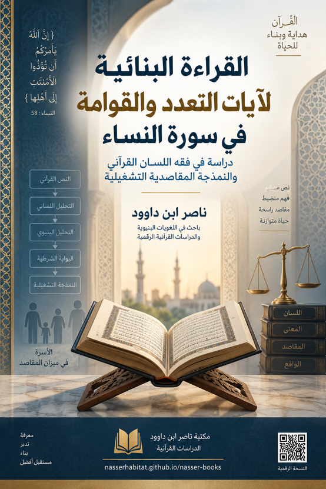

ناصر ابن داوود

نسخة نصية مستخرجة من ملف Word الذي قدمه المؤلف؛ راجع المصدر الأصلي.
جارٍ تجهيز القارئ…
مكتبة ناصر ابن داوود
دراسات قرآنية • قراءة بنائية • نمذجة تشغيلية
القراءة البنائية لآيات التعدد والقوامة
في سورة النساء
دراسة في فقه اللسان القرآني والنمذجة المقاصدية التشغيلية
ناصر ابن داوود
باحث ومؤلف ومهندس نظم
المكتبة الرقمية للدراسات القرآنية
المعرفة حق مشاع • إتاحة مفتوحة
nasserhabitat.github.io/nasser-books/
2026
الملخص الأكاديمي الممتد (باللغة العربية)
عنوان البحث: القراءة البنائية لآيات التعدد والقوامة في سورة النساء: دراسة في فقه اللسان القرآني والنمذجة المقاصدية التشغيلية
الملخص: تسعى هذه الدراسة إلى معالجة إشكالية التجزئة النصية والاقتطاع الفقهي الموروث لآيات الأحكام في سورة النساء، ولا سيما آيات التعدد والقوامة والعلاقات الأسرية. تنطلق الدراسة من فرضية مفادها أن استبعاد البناء الشرطي وعزل المفردات القرآنية عن نسقها اللساني والوظيفي أدى إلى اختزال الأحكام في دلالات بيولوجية وسلطوية ذكورية لا تعكس المقاصد الكلية للنص القرآني.
تعتمد الدراسة منهجية "فقه اللسان القرآني" المقترنة بالتحليل البنيوي النسقي والنمذجة المنطقية التشغيلية (Systems & Logic Analysis)، للوصول إلى تفكيك المصطلحات المحورية وإعادة بنائها ضمن خوارزمية مغلقة. وتُظهر نتائج التحصيل اللساني أن لفظ "النساء" يُعبر بنيوياً عن العُقد المخرجات والمتأخرات في المنظومة الاجتماعية أو المعرفية (من جذر نسأ)، وتتمايز دلالته عن "الأزواج" التي تفيد التكافئ الاقتراني والسكن، و"الامرأة" التي تشير إلى انقطاع التوافق الفكري أو الوظيفي. كما تُقدم الدراسة تأصيلاً مفهومياً لمصطلح "المحصنات" باعتبارها الأنظمة والأُطر المنيعة ذات الحماية المشددة، و"ما ملكت أيمانكم" بوصفها الالتزامات والعهود التشغيلية النافذة بقدر الاستطاعة واليمين المبرم.
وعلى مستوى الهندسة الشرطية، أثبتت الدراسة أن آية التعدد (النساء: 3) تُشكل بوابة منطقية مقيدة بشرط حاكم وهو كفالة اليتامى والإقساط لهم، وليست رخصة أفقية مفتوحة للجمع الرغبي. وبدلالة نفي العدل المطلق في الآية (129) بوصفه مانعاً بنائياً (System Inhibitor)، تنتهي الدراسة إلى أن النظام الأسري القرآني يُلزم بالعودة الحتمية إلى الحالة الصفرية المستقرة وهي الإفراد (فواحدة) لمنع العَيْل والحيف. كما كشفت الدراسة عن المفهوم التشغيلي لـ "القوامة" (النساء: 34) بوصفها تكليفاً إدارياً وإنفاقياً يرتبط بشرطه المالي وحمايته البيئية، وتسقط بانتفائه. يُقدم البحث نموذجاً حاسوبياً وشجرة قرارات منطقية (Decision Tree) تمكن المشرع القضائي المعاصر من إعادة تقنين أحوال الأسرة وتطوير الاجتهاد المقاصدي.
الكلمات المفتاحية: فقه اللسان القرآني، القراءة البنائية، التعدد، القوامة، سورة النساء، النمذجة التشغيلية، المحصنات، ملك اليمين، الشروط المنطقية.
Extended Academic Abstract (English)
Title: A Structural Reading of Polygamy and Guardianship Verses in Surah An-Nisa: A Study in Quranic Linguistic Hermeneutics (Fiqh al-Lisan) and Operational Teleological Modeling
Abstract: This study addresses the critical problem of textual fragmentation and conventional atomistic jurisprudence regarding the legal verses of Surah An-Nisa, specifically those pertaining to polygamy, male guardianship (Qawwamah), and family governance. The research posits that isolating conditional clauses and severing Quranic terminology from its structural and functional ecosystem has reduced holistic systemic provisions into literal, biological, and patriarchal mandates that obscure the text's overarching teleological objectives.
Employing the methodology of Quranic Linguistic Hermeneutics (Fiqh al-Lisan) combined with structural-systemic analysis and operational logic modeling, the study deconstructs and reconstitutes core Quranic terms within a closed algorithmic framework. The linguistic investigation reveals that Al-Nisa' structurally denotes lagging output nodes and subordinate elements within a social or cognitive framework (derived from the root n-s-a), distinguishing it from Al-Azwaj (functional parity and tranquil pairing) and Al-Imra'ah (a state of structural or ideological misalignment). Furthermore, the study establishes an institutional conceptualization of Al-Muhsanat as fortified, high-security operational boundaries, and Ma Malakat Aymanukum as legally binding, enforceable contractual obligations governed by oath and capability.
At the level of conditional syntax, the research demonstrates that the polygamy clause in Surah An-Nisa (Verse 3) operates as a strictly conditional logic gate contingent upon resolving social vulnerability (the welfare and equitable treatment of orphans), rather than a general horizontal permission for personal accumulation. Coupled with the structural constraint in Verse 129—which establishes the functional impossibility of absolute material equity as a system inhibitor—the framework proves that monogamy (Fa-Wahidah) serves as the absolute default stable state (N=1) to prevent systemic collapse (Ta'ulu). Additionally, Qawwamah (Verse 34) is re-framed not as an inherent patriarchal status, but as a dynamic operational function contingent upon active financial maintenance and protective capacity. The study culminates in a computational logic decision tree designed to inform modern judicial codification and reform personal status legislation.
Keywords: Quranic Linguistic Hermeneutics (Fiqh al-Lisan), Structural Analysis, Polygamy, Qawwamah, Surah An-Nisa, Operational Modeling, Al-Muhsanat, Ma Malakat Aymanukum, Closed Conditional Logic.
الملخص التنفيذي للبحث: التقييد المقاصدي والضوابط القضائية لرخصة الاقتران في سورة النساء
دراسة بنيوية مقارنة في ضوء فقه اللسان القرآني والتشريع المعاصر
أولاً: إطار الدراسة والمنظور المنهجي
يستهدف هذا البحث علاج الخلل التفسيري والتشريعي الناجم عن اقتطاع النصوص الحكامية في سورة النساء عن بواباتها الشرطية ومحاورها البنيوية. عبر اعتماد منهج "فقه اللسان القرآني"—الذي يتعامل مع النص القرآني بوصفه نسقاً لغوياً ودلالياً مغلقاً ومتكاملاً—تُفكك الدراسة المفاهيم الموروثة حول "الاقتران المتعدد"، وتُنقل الرخصة من نطاق الاستهلاك الفردي والأهواء الشخصية إلى نطاق التكافل المؤسسي والاستخلاف الاجتماعي.